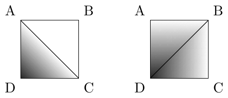

49th ICPC World Championship · Problem K
After years of searching you have come across Captain Blackbeard’s old map showing where his long-lost treasure is hidden, deep on the ocean floor. The map was once a hypsometric map – that is, it showed the ocean depth for the region around the treasure – but many of the elevation marks have faded away over time and are no longer legible.
Specifically, the map covers a rectangular part of the ocean, subdivided into an (n − 1) × (m − 1) rectangular grid of unit squares. The map originally showed the ocean depth d(p) for each point p = (x, y) with integer coordinates 1 ≤ x ≤ n and 1 ≤ y ≤ m. There are no islets in the region. In other words, it is known that d(p) ≥ 0 for all points.
Preparing the map must have been quite a struggle for Blackbeard, since there is no unique natural way to interpolate the depths of points with non-integer coordinates. Consider a unit square on the grid, with corners at the grid points A, B, C, and D in clockwise order, and some depth d(p) stored for each p ∈ {A, B, C, D}. One natural way is to interpolate the depth in the triangle ABC linearly, and likewise in CDA. Another equally natural way is to interpolate linearly within BCD, and likewise within DAB. Usually, the results of those two interpolations are different. For example, if d(A) = d(B) = d(C) = 0 and d(D) = 1, the first method results in depths across all of ABC being equal to zero (Figure K.1 left), while the second method results in the depths being positive in the whole interior of the square (right).

However, Blackbeard was as stubborn as he was cruel and would not let such pesky ambiguities stop him. To find the perfect hiding spot for his treasure, he scoured the seven seas for a region of the ocean where the two methods described above yield the same results for each unit square (or maybe he forced some of his pirates to do a bit of terraforming work to achieve this – scholars disagree).
Back in the present, you are preparing an expedition to retrieve the treasure, and would like to figure out at what depth the treasure could be buried. Specifically, given the remaining depth data of the map, you should calculate the smallest possible depth at the treasure location.
The first line of input contains five integers n, m, k, tx, and ty, where n and m (2 ≤ n, m ≤ 3·105) denote the maximum coordinates of the grid, k (1 ≤ k ≤ 3·105) is the number of known depths, and (tx, ty) is the location of the treasure (1 ≤ tx ≤ n; 1 ≤ ty ≤ m). Each of the next k lines contains three integers x, y, and d (1 ≤ x ≤ n; 1 ≤ y ≤ m; 0 ≤ d ≤ 109), indicating that the depth at coordinate (x, y) of the grid equals d. Each pair (x, y) appears in the input at most once.
If the provided data points can be extended to a valid map (that is, a map where, for each unit square, the two methods of interpolation yield the same results, and all points have non-negative depth), output one integer: the smallest possible depth of (tx, ty) – it can be shown that this is always an integer. Otherwise, output impossible.
3 3 5 1 1 1 3 1 3 3 2 2 3 3 2 2 4 2 1 5
3
3 5 4 3 4 2 4 1 2 2 2 1 1 4 3 1 5
1
3 3 3 3 3 2 3 1 2 1 2 1 2 4
0
3 3 4 3 2 2 1 2 2 3 3 1 3 4 1 1 5
impossible
3 3 3 2 2 3 2 0 2 2 1 2 3 0
impossible
Explanation of Sample 5: Even though the depth of (2, 2) is given in the input, the provided data points cannot be extended to a valid map, so the correct answer is impossible.